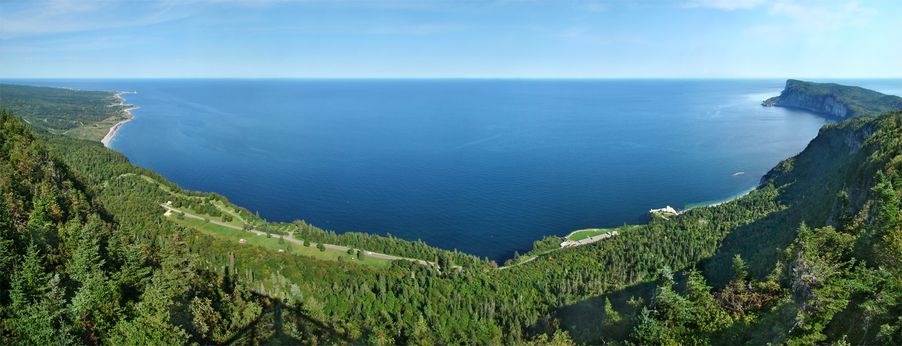
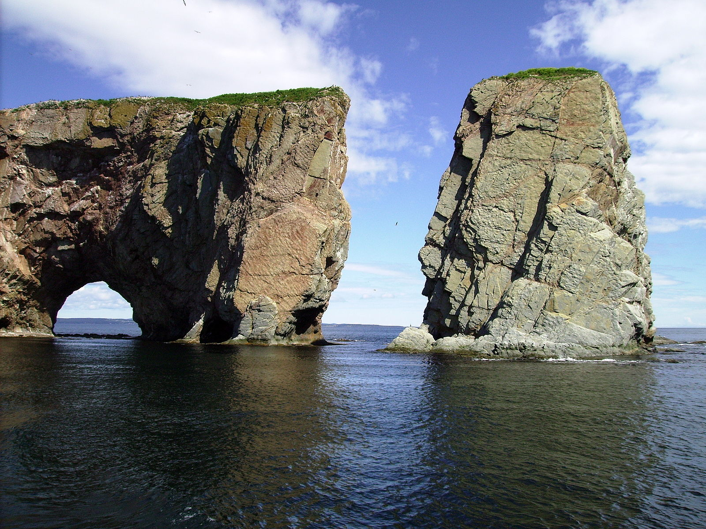

First vacation trip.
Roadtrip? Take the scenic route
Written by Joe Murray | August 23, 2018

The drive through the Gaspé peninsula of Quebec has been on my bucket list for some time.
The beautiful scenic views of towering mountains are interspersed with the breath-taking
and sometimes gut-clenching steep hills and hairpin turns. The drive is at times
exhilarating but not for the faint of heart. There are many sights to see along the way.
Foriilon National Park
This is a large national park which partly lies within Gaspé's city boundaries. There are
plenty of hiking trails and many viewpoints for those more photographically inclined. Paired
with the mountainous views and plentiful shoreline, this is a must visit for photographers.
If you are more of a history buff, keep an eye out for Fort Peninsula, a fort built during
World War II to protect the bay from invasion. The fort is open for visitors to explore.
Look for the two cannons!

Perce Rock
Percé Rock is a popular destination for tourists who flock to see this natural wonder.
Carved by years of water erosion, Perce Rock is known for being one of the largest natural
arches located in water.
Centre d'Art Marcel Gagnon, Sainte-Flavie

If you are near Sainte-Flavie, stop by the Centre d'Art Marcel Gagnon, a small cafe/shop/gallery featuring the art of Marcel Gagnon and those of his family members. Outside the cafe, the coast is dotted with many tall leaning figures. These started off as figure
studies for Marcel's paintings but grew to become an art project of their own. Called "Le
Grand Rassemblement" (The Grand Gathering), the figures are striking in the way they appear
and disappear with the tides.
Last but not least...
Once a bustling port and dubbed the "birthplace of Canada", Gaspé has a lot of history to
explore. Read more about the role Gaspé played in the history of Canada by visiting the "Birthplace of Canada" interpretation site in the city of Gaspé. Enjoy the views and while you're there, be sure to try the traditional cod cakes.